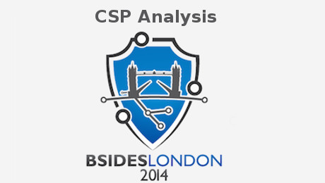

BSidesLondon 2014

Here is my review on the BSidesLondon '14 with a heavy focus on the rookie track, since I spent almost all of my time there.
As promised in my talk "CSP Analysis - Attacking XSS Mitigation", I published the source code of all my examples (and more) along with some explanation of what I did on github.
My Rookie Talk
First of all, here is the video :)
BSidesLondon 2014 - Rookie Talks:
First talk was by Sasha Zijinovic and was called "Run-time tools to aid application security assessments". It was an interesting topic, although I found it hard to follow because Sasha often looked at the floor or his slides. It was still a good talk though and I hope to see Sasha talk at other cons in the future.
Right after that Kristo Helasvuo held his "Copenhagen and Becks for Cybersecurity" talk, and I'm sorry but I really can't tell you what's it all about. I had problems understanding him but it could also be because I missed the first five minutes from his 15 minute talk. In retrospective, it's probably the later.
The next talk, "Reputational Damage" was canceled and replaced with "A look at modern warfare" by Kaitlyn Garratley (@kaitlyn4495) and was very well presented. We got a good look at the costs of normal warfare (building tanks, training troops, etc.) and modern warfare (e.g. developing and distributing stuxnet like weapons).
"When a noob comes aware" was an excellent talk by Herbie Zimmerman and let's just say he nailed it. The talk was about awareness programs and how they are often approached from the wrong perspective. Herbie said he will probably publish the video of his talk. If I get it, I'll add the link.
After Herbie, Scott MacKenzie presented his "Infosec is board Responsibility" talk, which I really enjoyed. @Scott, I might have to get back to you with some questions once I'm back home.
Just before lunch, Grant Willcox presented his Recon-NG module in "Crawling Metadata with Recon-ng" which was really interesting. Now I have to play with it - thanks Grant... so much to do, so little time.
After lunch, I came a little bit to late back to the rookie track so I missed half of Joseph Greenwoods talk on "Game-Based CTFs - Engaging University Students in InfoSec". Keypoint for me was, that the reason for doing CTFs, aside from being really interesting and a lot of fun, are rarely explained. Joseph took an approach to show students what are possible results of an actual breach in an end-of-world scenario. He and his team recoded the nuclear-apocalypse game DefCon in Python and hooked it up to vulnerable servers. Once a team hacked a server, it could launch enemy nuclear missles in DefCon at enemy cities.
I did a quick sweep through the BSides halls and after talking to some of the sponsors, I watched the talks "Why information security should be important to all of us" by Beverley A MacKenzie and "Zero-Day Surprises via your Supply Chain" by Vivian Nwoji. Both of them got me thinking, which is probably why I didn't pay too much attention to Vinayak Rams talk "SIEM - making the white elephant dance". Sorry about that, but if I remember correctly it was something along the lines of people putting in the wrong data and expecting marvelous result while ending up being dissapointed by their SIEM.
The "Best Rookie Talk" prize winning presentation was "Is privacy still a thing" by Georgi Boiko, and I think there is no need for me to say anything about it. He earned it, go watch it! (if you find it..)
"A multidisciplinary Perspective on Cybersecurity" is definitely not your average infosec talk. It was a completely different approach by Emil Tan, which I'm not able to explain from memory, however if it is uploaded (I'm looking at you Emil!) I will definitely watch it again, maybe I'll be able to explain it then. Good talk!
Between Emils talk and the next one, there was a short break giving me just enough time to realize that I had to give my own presentation soon. Joseph Gwynne-Jones gave his talk completely in sign-language, with a translator speaking to us. This was definately a new experience and kudos to Joseph for pulling this one off!
RFID hacking is something I haven't had much contact with yet, but I probably will try my luck at it after watching "RFID Hacking - an introduction" by @d3sre. I'm amazed that she did most of it on an arduino, writing all of the protocol stuff herself.
Time for Fraser Scotts talk on "Privacy Through Choice: Something for the Masses". I'm sorry Scott, but I don't remember anything of your talk. Probably because I was nervous being up next. I'll watch it once it's on Youtube though ;)
My own talk was "Content Security Policy Analysis - Attacking XSS Mitigation". I will probably add more info once I get home, but for now, please checkout the git repo with the examples and explanations at github
I think my talk went well, but I won't know for sure until I see the video (which I will post regardless of the outcome!). Big Thanks goes out to my mentor Dave Hartley from MWR Labs for helping me, as well as to Scott Finlay, a colleague of mine who helped out with the javascript examples during research and my brother Moritz Jäger (the one from nerd-supreme.de) for his honest feedback.
Also of course to everyone who made BSidesLondon 2014 possible, to Robin and Finnux for running the Rookie Track and for everyone who attended for an awesome event.
PS:
I'm sorry that I didn't watch all of the rookie talks, especially "Teaching Kids programming and Cyber Security" by Dalian Terry and Sam Sanoop. I was really looking forward to this one, but after my talk I went out and just like that the keynote was up. Don't know what happened there...